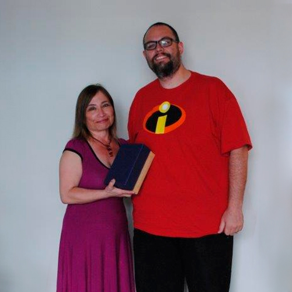
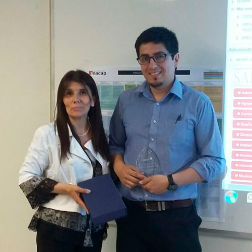
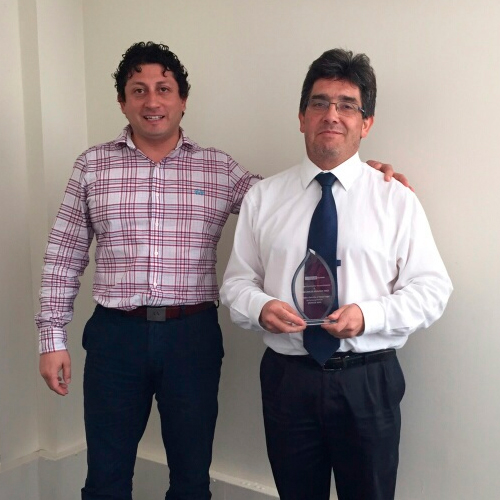

MEMORIA 2015
Esta competencia nace el año 2013 y se definió que su realización fuese cada dos años. El año 2015, la competencia incluyó a todos los instructores de Chile que dictaron clases relacionadas con lenguajes de programación o que tuvieran conocimientos del lenguaje Java, y se desarrolló en tres fases, donde se reconoció a los mejores en cada una de ellas.
El ganador de la edición 2015 fue el docente de la Sede Antofagasta, Paul Beltrand Urra, quien resultó ganador tras haber obtenido los mejores puntajes en cada una de las fases. A continuación, el detalle de la clasificación final.
|  |
|
|  |
|
|  |
|
(*) Clasificación final de competencia Java Cup 2015.
Volver a la página principal.